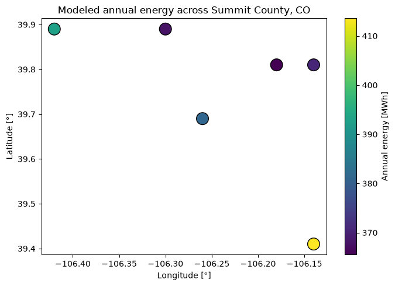

PySAM: Single Location & Geospatial#
Run NREL’s System Advisor Model (via PySAM)
through pvdeg for a single site and across a grid of locations.
Every example here uses weather data bundled with the repository, so the notebook runs fully offline with no API key or network access required.
import os
import json
import pandas as pd
import xarray as xr
import matplotlib.pyplot as plt
import pvdeg
from pvdeg import TEST_DATA_DIR
About PySAM#
pvdeg.pysam.pysam wraps a PySAM performance model (here pvsamv1) and returns its
full output dictionary. You supply a weather DataFrame and a meta dict — exactly
what pvdeg.weather produces — plus a model and a named default configuration.
See the SAM inputs reference for the available configurations.
Single location#
Load a cached NSRDB weather file for Miami, FL that ships with the repo and run the model for that one site.
# Cached NSRDB weather for Miami, FL (ships with the repo) — fully offline.
data_dir = os.path.join(
os.path.dirname(os.path.dirname(pvdeg.__file__)), "tutorials", "data"
)
weather_miami = pd.read_csv(
os.path.join(data_dir, "psm4_miami.csv"), index_col=0, parse_dates=True
)
with open(os.path.join(data_dir, "meta_miami.json")) as f:
meta_miami = json.load(f)
results = pvdeg.pysam.pysam(
weather_df=weather_miami,
meta=meta_miami,
pv_model="pvsamv1",
pv_model_default="FlatPlatePVCommercial",
)
results["annual_energy"]
966537.7239838529
Geospatial#
pvdeg can map a function across many locations at once. Here we run PySAM over a
small grid of sites in Summit County, Colorado, using weather and metadata bundled
with the repo (tests/data).
GEO_META = pd.read_csv(os.path.join(TEST_DATA_DIR, "summit-meta.csv"), index_col=0)
GEO_WEATHER = xr.open_dataset(os.path.join(TEST_DATA_DIR, "summit-weather.nc"))
A PySAM wrapper for geospatial data#
pvdeg.geospatial.analysis calls a function once per location. The bundled weather
is half-hourly (17520 steps) but PySAM expects hourly data (8760 steps), so the
wrapper below resamples to hourly, drops the helper gid column, and returns just
the scalar we want to map — annual_energy.
# this is just a wrapper to grab the result we want
def pysam_annual_energy(
weather_df, meta, pv_model="pvsamv1", pv_model_default="FlatPlatePVCommercial"
):
# Drop the gid column if present (added by geospatial conversion)
weather_df = weather_df.drop(columns=["gid"])
# Resample half-hourly data to hourly (PySAM expects hourly)
weather_df = weather_df.resample("h").mean()
results = pvdeg.pysam.pysam(
weather_df=weather_df,
meta=meta,
pv_model=pv_model,
pv_model_default=pv_model_default,
)
return results["annual_energy"]
# PySAM runs one full simulation per location, so use a subset to keep runtime modest.
subset_gids = GEO_META.index[:6]
GEO_META_SUB = GEO_META.loc[subset_gids]
# Chunk along 'gid' (one location per task) so the sites run in parallel instead of
# serially. 'time' is kept whole because each location needs its full timeseries.
GEO_WEATHER_SUB = GEO_WEATHER.sel(gid=subset_gids).chunk({"gid": 1, "time": -1})
# A scalar result is stored under the wrapper function's name, so the output template
# (which inherits the 'gid' chunking from the weather) must use that same key.
template = pvdeg.geospatial.output_template(
ds_gids=GEO_WEATHER_SUB,
shapes={
"pysam_annual_energy": ("gid",),
},
)
geo_res = pvdeg.geospatial.analysis(
weather_ds=GEO_WEATHER_SUB,
meta_df=GEO_META_SUB,
func=pysam_annual_energy,
template=template,
)
D:\repos\public\PVDegradationTools\pvdeg\utilities.py:1570: FutureWarning: dropping variables using `drop` is deprecated; use drop_vars.
stacked = ds_gids.drop(["gid"])
geo_res
<xarray.Dataset> Size: 232B
Dimensions: (latitude: 4, longitude: 5)
Coordinates:
* latitude (latitude) float64 32B 39.41 39.69 39.81 39.89
* longitude (longitude) float64 40B -106.4 -106.3 ... -106.2 -106.1
Data variables:
pysam_annual_energy (latitude, longitude) float64 160B nan nan ... nan nanMap the results#
Each site’s modeled annual energy, plotted at its location.
# analysis expands the results onto a (latitude, longitude) grid; keep the sites we ran.
sites = geo_res["pysam_annual_energy"].to_dataframe().dropna().reset_index()
fig, ax = plt.subplots(figsize=(7, 5))
sc = ax.scatter(
sites["longitude"],
sites["latitude"],
c=sites["pysam_annual_energy"] / 1e3,
s=220,
cmap="viridis",
edgecolor="k",
)
ax.set_xlabel("Longitude [\u00b0]")
ax.set_ylabel("Latitude [\u00b0]")
ax.set_title("Modeled annual energy across Summit County, CO")
fig.colorbar(sc, ax=ax, label="Annual energy [MWh]")
fig.tight_layout()
plt.show()
